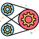

¿Te agrada lo que ves?

PROYECTOS DESTACADOS

Aquí encontrarás una selección de mis proyectos, donde he aplicado mis conocimientos para optimizar operaciones y transformar datos en decisiones estratégicas. Cada proyecto demuestra cómo aporto valor al mejorar procesos y proporcionar visibilidad clave en la cadena de suministro. ¡Explora mi trabajo y descubre cómo podemos optimizar juntos tu cadena de suministro!

GESTIÓN DE RUTAS
TCARGO XPRESS S.A.C

PROCESAMIENTO DE DATOS
STOL S.A.C | PROMART

PROYECTADO
STOL S.A.C | PROMART

EN PROCESO
...
EN PROCESO
...
EN PROCESO
...
EN PROCESO
...
EN PROCESO
...
EN PROCESO
...

HABILIDADES
Power BI

Excel
Power Query

Python

Visual Basic A.

SAP MM

Oracle WMS

MySQL

Liderazgo

Metodologías Ágiles (Lean)

Atención al cliente

JavaScript
PROCESO DE DISEÑO DE SOLUCIONES
El objetivo es transformar desafíos operativos y datos complejos en soluciones eficientes y estratégicas para almacén y logística. A través de una metodología probada, combinamos herramientas avanzadas de análisis y gestión para optimizar procesos, reducir costos y potenciar la toma de decisiones basadas en datos.

Análisis y Estrategia
Trabajamos juntos para diagnosticar los desafíos actuales en almacén y logística, definir los objetivos estratégicos y establecer los KPIs clave. Realizamos un análisis de datos inicial para identificar oportunidades de mejora y diseñar la hoja de ruta más efectiva.
Implementación y Optimización
En esta fase, desarrollamos e implementamos las soluciones acordadas, que pueden incluir la creación de scripts en Vba, Apps Script y Python para automatización, el diseño y la construcción de modelos de datos y dashboards en Power BI, y la optimización de procesos operativos para maximizar la eficiencia.


Monitoreo y Evolución
Monitorizamos la implementación y los KPIs clave para asegurar que se alcancen los objetivos definidos. Analizamos los resultados, identificamos nuevas oportunidades de mejora y proporcionamos capacitación y soporte continuo para garantizar la sostenibilidad y evolución de las soluciones implementadas.